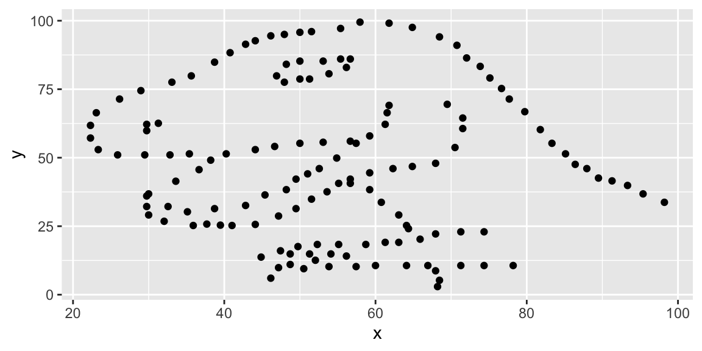
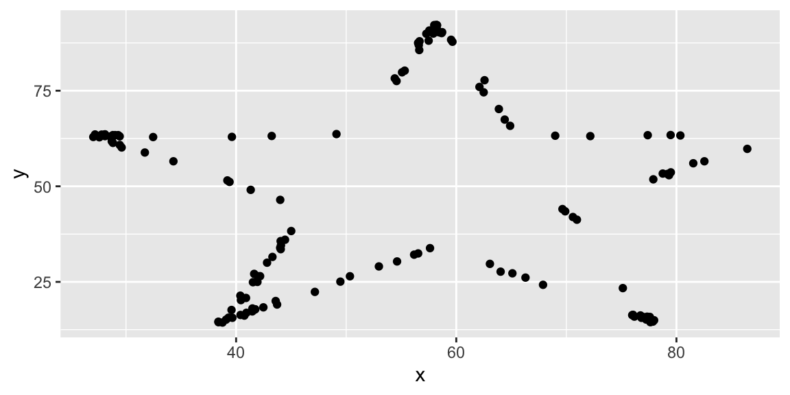
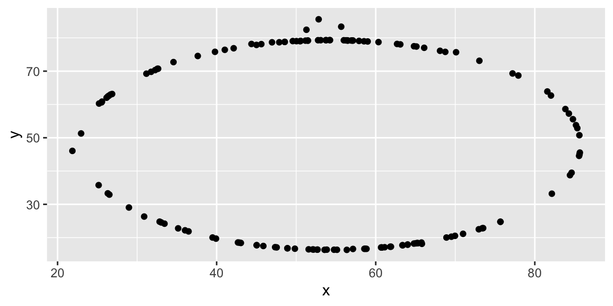
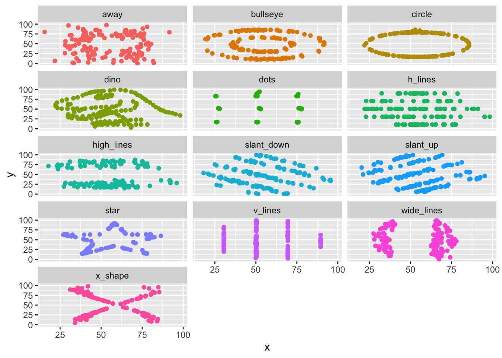

Assignment link: https://datascience4psych.github.io/DataScience4Psych/lab01execercise.html
Archived linked: https://web.archive.org/web/20250304114655/https://datascience4psych.github.io/DataScience4Psych/lab01execercise.html
library(tidyverse) ## Warning: package 'purrr' was built under R version 4.3.3library(datasauRus)
#type in ?(data) to get the dataset to pull up1846 rows 2 columns (assume x and y) variables are: away, bullseye, circle, dino, dots, h_lines, high_lines, slant_down, slant_up, star, v_lines, wide_lines, x_shape
Code to create:
dino_data <- datasaurus_dozen %>%
filter(dataset == "dino")
ggplot(data = dino_data, mapping = aes(x = x, y = y)) +
geom_point()
Code to calculate the correlation between x and
y in this dataset:
dino_data %>%
summarize(r = cor(x, y))## # A tibble: 1 × 1
## r
## <dbl>
## 1 -0.0645Observations: | Data pulled from dinosaur dataset | ggplot function is being used to graph each datapoint from datasaurus_dozen/dino_data | data must be have x and y | almost 0 coorelation, makes sense
Graph of star data
star_data <- datasaurus_dozen %>%
filter(dataset == "star")
ggplot(data = star_data, mapping = aes(x = x, y = y)) +
geom_point()
correlation for star data
star_data %>%
summarize(r = cor(x, y))## # A tibble: 1 × 1
## r
## <dbl>
## 1 -0.0630Observations: | star had lots of datapoints around the points but not on the straight parts of the stars
Code for circle data
circle_data <- datasaurus_dozen %>%
filter(dataset == "circle")
ggplot(data = circle_data, mapping = aes(x = x, y = y)) +
geom_point()
Note there’s a couple random plot points that are off
circle_data %>%
summarize(r = cor(x, y))## # A tibble: 1 × 1
## r
## <dbl>
## 1 -0.0683Plots for all datasets
ggplot(datasaurus_dozen, aes(x = x, y = y, color = dataset)) +
geom_point() +
facet_wrap(~dataset, ncol = 3) +
theme(legend.position = "none")
Correlations for all datasets - not currently doing what it’s supposed to do
datasaurus_dozen %>%
group_by(dataset) %>%
summarize(r = cor(x, y))## # A tibble: 13 × 2
## dataset r
## <chr> <dbl>
## 1 away -0.0641
## 2 bullseye -0.0686
## 3 circle -0.0683
## 4 dino -0.0645
## 5 dots -0.0603
## 6 h_lines -0.0617
## 7 high_lines -0.0685
## 8 slant_down -0.0690
## 9 slant_up -0.0686
## 10 star -0.0630
## 11 v_lines -0.0694
## 12 wide_lines -0.0666
## 13 x_shape -0.0656